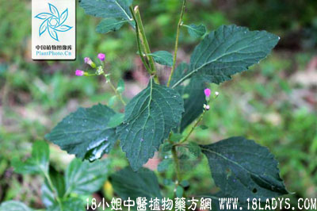

伤寒草(中药材植物名:夜牵牛)(植物科目:菊科)

别名：夜牵牛。
植物名：夜牵牛。
生长环境：本品为一年生草本，生长于旷地、路旁或村庄附近。
分布：我国南部各省，广州附近极为常见。
入药部分：全草。
采集期：夏、秋季。
自采地点：小山岗。
性味：性凉、味淡。
功能：清肝热。
主治、用量个和用法：1、外感发热；2、湿热下痢：均干用5钱至1两，清水煎服；3、小儿疴夜尿：干用3～5钱，清水煎服。
（方歌）清肝散热伤寒草，治热下痢兼扭肚,小儿夜尿频频疴，煎服两三回便好。
按：古时有人称伤寒草为感冒草，现人称黄花母草为感冒草，使用时宜鉴别。查感冒草、伤寒草、黄花母草是三种不同植物。